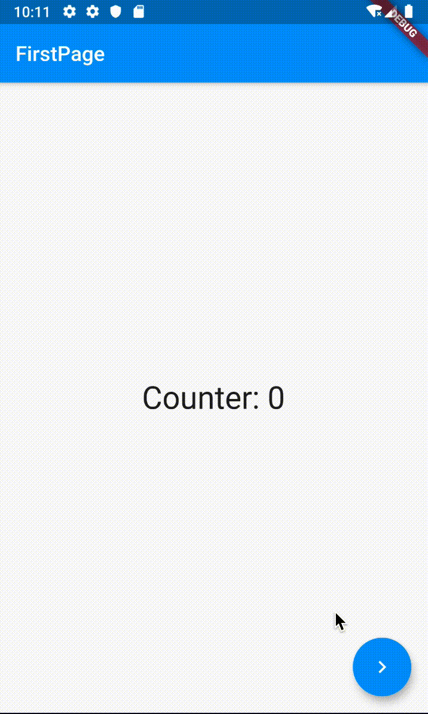

- 00 开篇词 为什么每一位大前端从业者都应该学习Flutter？.md
- 01 预习篇 · 从0开始搭建Flutter工程环境.md
- 02 预习篇 · Dart语言概览.md
- 03 深入理解跨平台方案的历史发展逻辑.md
- 04 Flutter区别于其他方案的关键技术是什么？.md
- 05 从标准模板入手，体会Flutter代码是如何运行在原生系统上的.md
- 06 基础语法与类型变量：Dart是如何表示信息的？.md
- 07 函数、类与运算符：Dart是如何处理信息的？.md
- 08 综合案例：掌握Dart核心特性.md
- 09 Widget，构建Flutter界面的基石.md
- 10 Widget中的State到底是什么？.md
- 11 提到生命周期，我们是在说什么？.md
- 12 经典控件（一）：文本、图片和按钮在Flutter中怎么用？.md
- 13 经典控件（二）：UITableView_ListView在Flutter中是什么？.md
- 14 经典布局：如何定义子控件在父容器中排版的位置？.md
- 15 组合与自绘，我该选用何种方式自定义Widget？.md
- 16 从夜间模式说起，如何定制不同风格的App主题？.md
- 17 依赖管理（一）：图片、配置和字体在Flutter中怎么用？.md
- 18 依赖管理（二）：第三方组件库在Flutter中要如何管理？.md
- 19 用户交互事件该如何响应？.md
- 20 关于跨组件传递数据，你只需要记住这三招.md
- 21 路由与导航，Flutter是这样实现页面切换的.md
- 22 如何构造炫酷的动画效果？.md
- 23 单线程模型怎么保证UI运行流畅？.md
- 24 HTTP网络编程与JSON解析.md
- 25 本地存储与数据库的使用和优化.md
- 26 如何在Dart层兼容Android_iOS平台特定实现？（一）.md
- 27 如何在Dart层兼容Android_iOS平台特定实现？（二）.md
- 28 如何在原生应用中混编Flutter工程？.md
- 29 混合开发，该用何种方案管理导航栈？.md
- 30 为什么需要做状态管理，怎么做？.md
- 31 如何实现原生推送能力？.md
- 32 适配国际化，除了多语言我们还需要注意什么_.md
- 33 如何适配不同分辨率的手机屏幕？.md
- 34 如何理解Flutter的编译模式？.md
- 35 Hot Reload是怎么做到的？.md
- 36 如何通过工具链优化开发调试效率？.md
- 37 如何检测并优化Flutter App的整体性能表现？.md
- 38 如何通过自动化测试提高交付质量？.md
- 39 线上出现问题，该如何做好异常捕获与信息采集？.md
- 40 衡量Flutter App线上质量，我们需要关注这三个指标.md
- 41 组件化和平台化，该如何组织合理稳定的Flutter工程结构？.md
- 42 如何构建高效的Flutter App打包发布环境？.md
- 43 如何构建自己的Flutter混合开发框架（一）？.md
- 44 如何构建自己的Flutter混合开发框架（二）？.md
- 特别放送 温故而知新，与你说说专栏的那些思考题.md
- 结束语 勿畏难，勿轻略.md
30 为什么需要做状态管理，怎么做？
你好，我是陈航。
在上一篇文章中，我与你分享了如何在原生混编Flutter工程中管理混合导航栈，应对跨渲染引擎的页面跳转，即解决原生页面如何切换到Flutter页面，以及Flutter页面如何切换到原生页面的问题。
如果说跨渲染引擎页面切换的关键在于，如何确保页面跳转的渲染体验一致性，那么跨组件（页面）之间保持数据共享的关键就在于，如何清晰地维护组件共用的数据状态了。在第20篇文章“关于跨组件传递数据，你只需要记住这三招”中，我已经与你介绍了InheritedWidget、Notification和EventBus这3种数据传递机制，通过它们可以实现组件间的单向数据传递。
如果我们的应用足够简单，数据流动的方向和顺序是清晰的，我们只需要将数据映射成视图就可以了。作为声明式的框架，Flutter可以自动处理数据到渲染的全过程，通常并不需要状态管理。
但，随着产品需求迭代节奏加快，项目逐渐变得庞大时，我们往往就需要管理不同组件、不同页面之间共享的数据关系。当需要共享的数据关系达到几十上百个的时候，我们就很难保持清晰的数据流动方向和顺序了，导致应用内各种数据传递嵌套和回调满天飞。在这个时候，我们迫切需要一个解决方案，来帮助我们理清楚这些共享数据的关系，于是状态管理框架便应运而生。
Flutter在设计声明式UI上借鉴了不少React的设计思想，因此涌现了诸如flutter_redux、flutter_mobx 、fish_redux等基于前端设计理念的状态管理框架。但这些框架大都比较复杂，且需要对框架设计概念有一定理解，学习门槛相对较高。
而源自Flutter官方的状态管理框架Provider则相对简单得多，不仅容易理解，而且框架的入侵性小，还可以方便地组合和控制UI刷新粒度。因此，在Google I/O 2019大会一经面世，Provider就成为了官方推荐的状态管理方式之一。
那么今天，我们就来聊聊Provider到底怎么用吧。
Provider
从名字就可以看出，Provider是一个用来提供数据的框架。它是InheritedWidget的语法糖，提供了依赖注入的功能，允许在Widget树中更加灵活地处理和传递数据。
那么，什么是依赖注入呢？通俗地说，依赖注入是一种可以让我们在需要时提取到所需资源的机制，即：预先将某种“资源”放到程序中某个我们都可以访问的位置，当需要使用这种“资源”时，直接去这个位置拿即可，而无需关心“资源”是谁放进去的。
所以，为了使用Provider，我们需要解决以下3个问题：
- 资源（即数据状态）如何封装？
- 资源放在哪儿，才都能访问得到？
- 具体使用时，如何取出资源？
接下来，我通过一个例子来与你演示如何使用Provider。
在下面的示例中，我们有两个独立的页面FirstPage和SecondPage，它们会共享计数器的状态：其中FirstPage负责读，SecondPage负责读和写。
在使用Provider之前，我们首先需要在pubspec.yaml文件中添加Provider的依赖：
dependencies:
flutter:
sdk: flutter
provider: 3.0.0+1 #provider依赖
添加好Provider的依赖后，我们就可以进行数据状态的封装了。这里，我们只有一个状态需要共享，即count。由于第二个页面还需要修改状态，因此我们还需要在数据状态的封装上包含更改数据的方法：
//定义需要共享的数据模型，通过混入ChangeNotifier管理听众
class CounterModel with ChangeNotifier {
int _count = 0;
//读方法
int get counter => _count;
//写方法
void increment() {
_count++;
notifyListeners();//通知听众刷新
}
}
可以看到，我们在资源封装类中使用mixin混入了ChangeNotifier。这个类能够帮助我们管理所有依赖资源封装类的听众。当资源封装类调用notifyListeners时，它会通知所有听众进行刷新。
资源已经封装完毕，接下来我们就需要考虑把它放到哪儿了。
因为Provider实际上是InheritedWidget的语法糖，所以通过Provider传递的数据从数据流动方向来看，是由父到子（或者反过来）。这时我们就明白了，原来需要把资源放到FirstPage和SecondPage的父Widget，也就是应用程序的实例MyApp中（当然，把资源放到更高的层级也是可以的，比如放到main函数中）：
class MyApp extends StatelessWidget {
@override
Widget build(BuildContext context) {
//通过Provider组件封装数据资源
return ChangeNotifierProvider.value(
value: CounterModel(),//需要共享的数据资源
child: MaterialApp(
home: FirstPage(),
)
);
}
}
可以看到，既然Provider是InheritedWidget的语法糖，因此它也是一个Widget。所以，我们直接在MaterialApp的外层使用Provider进行包装，就可以把数据资源依赖注入到应用中。
这里需要注意的是，由于封装的数据资源不仅需要为子Widget提供读的能力，还要提供写的能力，因此我们需要使用Provider的升级版ChangeNotifierProvider。而如果只需要为子Widget提供读能力，直接使用Provider即可。
最后，在注入数据资源完成之后，我们就可以在FirstPage和SecondPage这两个子Widget完成数据的读写操作了。
关于读数据，与InheritedWidget一样，我们可以通过Provider.of方法来获取资源数据。而如果我们想写数据，则需要通过获取到的资源数据，调用其暴露的更新数据方法（本例中对应的是increment），代码如下所示：
//第一个页面，负责读数据
class FirstPage extends StatelessWidget {
@override
Widget build(BuildContext context) {
//取出资源
final _counter = Provider.of<CounterModel>(context);
return Scaffold(
//展示资源中的数据
body: Text('Counter: ${_counter.counter}'),
//跳转到SecondPage
floatingActionButton: FloatingActionButton(
onPressed: () => Navigator.of(context).push(MaterialPageRoute(builder: (context) => SecondPage()))
));
}
}
//第二个页面，负责读写数据
class SecondPage extends StatelessWidget {
@override
Widget build(BuildContext context) {
//取出资源
final _counter = Provider.of<CounterModel>(context);
return Scaffold(
//展示资源中的数据
body: Text('Counter: ${_counter.counter}'),
//用资源更新方法来设置按钮点击回调
floatingActionButton:FloatingActionButton(
onPressed: _counter.increment,
child: Icon(Icons.add),
));
}
}
运行代码，试着多点击几次第二个界面的“+”按钮，关闭第二个界面，可以看到第一个界面也同步到了按钮的点击数。

图1 Provider使用示例
Consumer
通过上面的示例可以看到，使用Provider.of获取资源，可以得到资源暴露的数据的读写接口，在实现数据的共享和同步上还是比较简单的。但是，滥用Provider.of方法也有副作用，那就是当数据更新时，页面中其他的子Widget也会跟着一起刷新。
为验证这一点，我们以第二个界面右下角FloatingActionButton中的子Widget “+”Icon为例做个测试。
首先，为了打印出Icon控件每一次刷新的情况，我们需要自定义一个控件TestIcon，并在其build方法中返回Icon实例的同时，打印一句话：
//用于打印build方法执行情况的自定义控件
class TestIcon extends StatelessWidget {
@override
Widget build(BuildContext context) {
print("TestIcon build");
return Icon(Icons.add);//返回Icon实例
}
}
然后，我们用TestIcon控件，替换掉SecondPage中FloatingActionButton的Icon子Widget：
class SecondPage extends StatelessWidget {
@override
Widget build(BuildContext context) {
//取出共享的数据资源
final _counter = Provider.of<CounterModel>(context);
return Scaffold(
...
floatingActionButton:FloatingActionButton(
onPressed: _counter.increment,
child: TestIcon(),//替换掉原有的Icon(Icons.add)
));
}
运行这段实例，然后在第二个页面多次点击“+”按钮，观察控制台输出：
I/flutter (21595): TestIcon build
I/flutter (21595): TestIcon build
I/flutter (21595): TestIcon build
I/flutter (21595): TestIcon build
I/flutter (21595): TestIcon build
可以看到，TestIcon控件本来是一个不需要刷新的StatelessWidget，但却因为其父Widget FloatingActionButton所依赖的数据资源counter发生了变化，导致它也要跟着刷新。
那么，有没有办法能够在数据资源发生变化时，只刷新对资源存在依赖关系的Widget，而其他Widget保持不变呢？
答案当然是可以的。
在本次分享一开始时，我曾说Provider可以精确地控制UI刷新粒度，而这一切是基于Consumer实现的。Consumer使用了Builder模式创建UI，收到更新通知就会通过builder重新构建Widget。
接下来，我们就看看如何使用Consumer来改造SecondPage吧。
在下面的例子中，我们在SecondPage中去掉了Provider.of方法来获取counter的语句，在其真正需要这个数据资源的两个子Widget，即Text和FloatingActionButton中，使用Consumer来对它们进行了一层包装：
class SecondPage extends StatelessWidget {
@override
Widget build(BuildContext context) {
return Scaffold(
//使用Consumer来封装counter的读取
body: Consumer<CounterModel>(
//builder函数可以直接获取到counter参数
builder: (context, CounterModel counter, _) => Text('Value: ${counter.counter}')),
//使用Consumer来封装increment的读取
floatingActionButton: Consumer<CounterModel>(
//builder函数可以直接获取到increment参数
builder: (context, CounterModel counter, child) => FloatingActionButton(
onPressed: counter.increment,
child: child,
),
child: TestIcon(),
),
);
}
}
可以看到，Consumer中的builder实际上就是真正刷新UI的函数，它接收3个参数，即context、model和child。其中：context是Widget的build方法传进来的BuildContext，model是我们需要的数据资源，而child则用来构建那些与数据资源无关的部分。在数据资源发生变更时，builder会多次执行，但child不会重建。
运行这段代码，可以发现，不管我们点击了多少次“+”按钮，TestIcon控件始终没有发生销毁重建。
多状态的资源封装
通过上面的例子，我们学习了Provider是如何共享一个数据状态的。那么，如果有多个数据状态需要共享，我们又该如何处理呢？
其实也不难。接下来，我就按照封装、注入和读写这3个步骤，与你介绍多个数据状态的共享。
在处理多个数据状态共享之前，我们需要先扩展一下上面计数器状态共享的例子，让两个页面之间展示计数器数据的Text能够共享App传递的字体大小。
首先，我们来看看如何封装。
多个数据状态与单个数据的封装并无不同，如果需要支持数据的读写，我们需要一个接一个地为每一个数据状态都封装一个单独的资源封装类；而如果数据是只读的，则可以直接传入原始的数据对象，从而省去资源封装的过程。
接下来，我们再看看如何实现注入。
在单状态的案例中，我们通过Provider的升级版ChangeNotifierProvider实现了可读写资源的注入，而如果我们想注入多个资源，则可以使用Provider的另一个升级版MultiProvider，来实现多个Provider的组合注入。
在下面的例子中，我们通过MultiProvider往App实例内注入了double和CounterModel这两个资源Provider：
class MyApp extends StatelessWidget {
@override
Widget build(BuildContext context) {
return MultiProvider(providers: [
Provider.value(value: 30.0),//注入字体大小
ChangeNotifierProvider.value(value: CounterModel())//注入计数器实例
],
child: MaterialApp(
home: FirstPage(),
));
}
}
在完成了多个资源的注入后，最后我们来看看如何获取这些资源。
这里，我们还是使用Provider.of方式来获取资源。相较于单状态资源的获取来说，获取多个资源时，我们只需要依次读取每一个资源即可：
final _counter = Provider.of<CounterModel>(context);//获取计时器实例
final textSize = Provider.of<double>(context);//获取字体大小
而如果以Consumer的方式来获取资源的话，我们只要使用Consumer2
//使用Consumer2获取两个数据资源
Consumer2<CounterModel,double>(
//builder函数以参数的形式提供了数据资源
builder: (context, CounterModel counter, double textSize, _) => Text(
'Value: ${counter.counter}',
style: TextStyle(fontSize: textSize))
)
可以看到，Consumer2与Consumer的使用方式基本一致，只不过是在builder方法中多了一个数据资源参数。事实上，如果你希望在子Widget中共享更多的数据，我们最多可以使用到Consumer6，即共享6个数据资源。
总结
好了，今天的分享就到这里，我们总结一下今天的主要内容吧。
我与你介绍了在Flutter中通过Provider进行状态管理的方法，Provider以InheritedWidget语法糖的方式，通过数据资源封装、数据注入和数据读写这3个步骤，为我们实现了跨组件（跨页面）之间的数据共享。
我们既可以用Provider来实现静态的数据读传递，也可以使用ChangeNotifierProvider来实现动态的数据读写传递，还可以通过MultiProvider来实现多个数据资源的共享。
在具体使用数据时，Provider.of和Consumer都可以实现数据的读取，并且Consumer还可以控制UI刷新的粒度，避免与数据无关的组件的无谓刷新。
可以看到，通过Provider来实现数据传递，无论在单个页面内还是在整个App之间，我们都可以很方便地实现状态管理，搞定那些通过StatefulWidget无法实现的场景，进而开发出简单、层次清晰、可扩展性高的应用。事实上，当我们使用Provider后，我们就再也不需要使用StatefulWidget了。
我把今天分享所涉及到的知识点打包到了GitHub中，你可以下载下来，反复运行几次，加深理解与记忆。
思考题
最后，我给你留一道思考题吧。
使用Provider可以实现2个同样类型的对象共享，你知道应该如何实现吗？
欢迎你在评论区给我留言分享你的观点，我会在下一篇文章中等待你！感谢你的收听，也欢迎你把这篇文章分享给更多的朋友一起阅读。
© 2019 - 2023 Liangliang Lee. Powered by gin and hexo-theme-book.